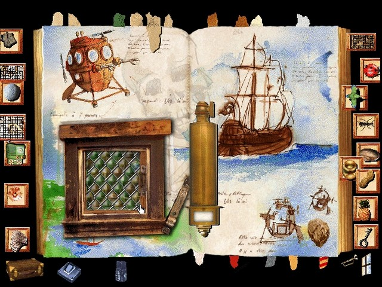
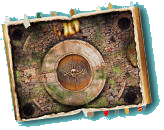
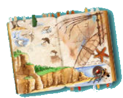
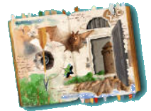
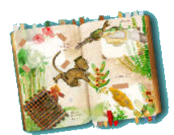

L'ILE MYSTERIEUSE - SOLUCE
Voici les solutions presque complètes (d'autres solutions existent pour certaines énigmes ou certains jeux)

Pointe du crâne
1- Faire la photo du Bernard l'ermite sans coquille. Rapporter le bernard-l'ermite (il se trouve au début du jeu sur la plage, et a pris une radio en guise de coquille). Quand on lui présente la coquille vide trouvée dans la page, il sort du poste de radio. Le prendre en photo avant qu'il ne rentre dans sa coquille. Recommencer l'opération inverse si besoin en posant le poste de radio près de lui. Coller la photo sur son emplacement.
2- Pour faire la photo de Gustave : se rendre dans la page Forêt et guetter le singe. Le prendre en photo. Rapporter sa photo et la coller sur son emplacement.
3- Une fois les deux photos posées, on accède au passage du Diable .
Passage du Diable
1- La ligne droite n'est pas conseillée. Il faut d'abord placer un certain nombre de pierres dans l'eau. (trouver les emplacements où elles ne coulent pas)
2- Choisir les planches dont la longueur correspond aux espaces créés.
Une fois le pont terminé (les 2 blocs carrés reliés entre eux), le crabe peut traverser. On accède alors au repaire des pirates (cache secrète).
Cache secrète
1- Cliquer sur la flamme puis sur le puit au centre.
2- Avec le feu, repousser les serpents dans les trous situés aux quatre coins. Les empêcher de ressortir tout en renouvelant l'opération pour faire sortir les autres.
3- Continuer jusqu'à ce que tous les serpents aient disparu du puit et que la pierre précieuse apparaisse. Prendre alors la pierre .

Promontoire
1- Il faut monter l'avion qui se présente en pièces détachées. On peut se repérer avec les marques sur la page. Les 2 branches se placent à l'avant des ailes.
2- Repousser le pélican avec la main avant qu'il ne disperse les pièces en battant des ailes.
3- Une fois l'avion terminé, il prend son envol en direction de l'îlot maudit…

Îlot maudit
1- Le quatrième coquillage manque. On le trouvera dans la crique.
2- Placer les quatre coquillages aux quatre coins de l'écran. Les faire tourner doucement sur leur axe chacun à leur tour jusqu'à ce qu'ils sifflent.
3- Quand les quatre coquillages sont en position, des lumières clignotent au centre de l'écran. Il faut trouver un moyen pour éloigner le scorpion qui protège le bouton situé au centre du cercle magique. On peut l 'éloigner avec le feu ou bien le distraire en apportant un animal sur la page (ceux qui connaissent l'Album secret ont un avantage !).
4- En cliquant sur le bouton, on ouvre le mécanisme : un objet plat apparaît. Il s'agit d'un morceau de la stèle sacrée.
Crique
1- On peut forcer le verrou de la porte en utilisant le coquillage présent dans la page mais il existe d'autres façons : prendre une pierre ou se servir de l'Ernexplosif.
2- Une fois la porte ouverte, on accède au bathyscaphe.
Bathyscaphe
1- Faire sortir les guêpes qui ont réussi à pénétrer à l'intérieur du bathyscaphe en cliquant sur les hublots. Pour les attirer à l'extérieur, on pourra se servir du pot de miel présent dans la Crique.
2- Une fois les guêpes à l'extérieur, le bathyscaphe se met en route. L'emplacement exact où se situe le galion des pirates, est indiqué à l'intérieur du carnet secret caché dans la cabane.
3- Cliquer au centre de la roue pour démarrer. Tourner la roue pour se diriger. Tourner la roue à 20 ° et se rendre jusqu'à la position 490 mètres.
Si Ernest vous invite à plonger avant d'avoir atteint ce point, continuez votre route en cliquant au centre de la roue.
Une fois l'emplacement trouvé cliquer sur le bouton en bas à droite de l'écran pour plonger. Si tout va bien, on aperçoit le bathyscaphe pendant la longée.
Épave
1- Une fois à l'intérieur du galion, cliquer sur le tas de cartes pour distribuer.
2- Le but de cette réussite ancienne est de faire disparaître toutes les cartes pour ne conserver que les quatre as. (les cartes les plus fortes).
3- Une carte disparaît quand on place sur elle une carte d'une même famille plus forte. Pour gagner, il ne doit rester que les quatre cartes les plus fortes du jeu (les quatre as).
Astuces :
- Pour gagner, la chance ne suffit pas toujours. Conserver le plus de tas possible le plus longtemps possible, de façon à multiplier les possibilités et libérer les as qui peuvent rester parfois cachés en dessous.
- Quand les quatre as sont apparus, veiller à ne pas laisser de carte en dessous. Quand on gagne, la trappe s'ouvre. Prendre le bijou qui apparaît alors.
Ne pas oublier de visiter la salle de cinéma avant de partir en cliquant sur la porte située en haut à droite de l'écran.
Cinéma
Accessible à partir de l'épave (porte en haut à droite), la salle de cinéma du galion permettra de visionner les 4 films dispersés dans l'album. Ces films contiennent certaines informations importantes pour comprendre le mystère de l'île.Termitière
1- Apporter une fourmi dans la page (on en trouvera une dans la page Volcan).
2- Repousser avec le curseur tous les termites dans un trou (celui de gauche est plus facile). Se servir de la pierre pour les enfermer à l'intérieur.
3- Quand tous les termites sont enfermés dans un trou, les fourmis pénètrent à l'intérieur du trou vide.
Galeries
1- Se servir des fourmis pour pousser les petites pierres rondes dans les trous prévus à cet effet.
Astuces :
- Attendre qu'une fourmi se place dans le sens souhaité, la prendre et la poser près de la pierre pour la pousser.
- Quand une pierre est bloquée, placer une fourmi dessus pour la bouger.
2- Quand les trois pierres sont en place, le passage s'ouvre. Poser les fourmis près de la sortie. Recommencer la même opération dans les écrans suivants.
3- Dans le dernier écran, il faut poser une pierre sur l'emplacement situé à droite du ravin. Une fois en place, un morceau de la stèle sacré apparaît. Le prendre et le conserver.
Plage
1- Il n'y a rien à chercher ici, sinon s'emparer du magnétophone habité par le bernard-l'ermite. Pour le faire sortir, il suffit de lui présenter un coquillage qui lui convienne. Aux dernières nouvelles, celui qui est présent dans la page Pointe du Crâne lui va très bien.
2- Profiter du moment où il sort pour le prendre en photo sans coquille. Cette photo est utile à la Pointe du Crâne. Pour le faire changer d'avis, il suffit de poser le magnéto sur la page ou de cliquer sur lui. De même avec le coquillage.
NB : quand le bernard-l'ermite est à l'intérieur du magnéto, il se met en position radio. On peut capter pendant quelques secondes différentes radios en cliquant sur lui. Ambiance garantie ! Pour fonctionner en position magnéto, il faut faire sortir le bernard-l'ermite et trouver un micro (on en trouvera un dans la cabane d'Ernest).
Tour
1- Il faut apporter dans la page le colibri trouvé à la Pointe du Crâne.2- En plaçant le colibri près de la girouette à l'opposé de la flèche, on parvient à la faire tourner face au sud-ouest. La porte s'ouvre.

Observatoire
1- Placer d'abord la longue vue sur son socle. Celle-ci est cachée à l'intérieur du coffre dans la cabane de l'oncle Ernest.2- Tourner la longue vue pour faire le tour de l'île. Cliquer sur le trou visible dans les falaises : c'est l'œil du cyclope.
Falaises
1- Cliquer sur Ernesto pour démarrer. Le morceau de la stèle sacrée est caché au Nord est (en haut à droite). Il y a plusieurs chemins pour s'y rendre.Pirogue
1- Il faut avoir activé au préalable l'appareil photo présent à la Pointe du Crâne, s'en servir pour photographier toutes les pages du carnet de montage. Poser les photos sur les 9 emplacements prévus à cet effet de façon à reconstituer l'image de la pirogue.
2- Une fois le puzzle terminé, la pirogue apparaît. On passe à la page suivante.NB : Cliquer sur le carnet de montage pour passer d'une page à l'autre.
Rivière
1- Pour faire avancer la pirogue, il faut placer dessus un animal capable d'actionner les roues à aubes. Plusieurs animaux de l'album en sont capables (scarabée, coccinelle, fourmi, etc…) De leur vitesse respective dépendra la difficulté du jeu.
2- Une fois la pirogue en route. Il faut la protéger en désactivant les pièges qui apparaissent. Il suffit de cliquer dessus avant qu'ils se déclenchent.
Cabane
On trouvera dans la cabane de l'oncle Ernest de nombreux indices dissimulés dans le carnet d'explorateur. Prendre le temps d'écouter les commentaires de l'oncle Ernest. A l'intérieur du coffre on trouvera le code secret permettant d'accéder, depuis la carte de l'île, au voilier qui se trouve sous le hublot.Il faut pour cela pas mal de patience. C'est l'un des jeux les plus difficiles de l'aventure.
1- Poser dans la page le magnétophone trouvé sur la plage. Pour fonctionner en mode magnétophone il doit être vidé de son locataire le bernard-l'ermite. (voir explications concernant la Pointe du Crâne).
2- Cliquer sur le perroquet pour le faire parler. Il ne faut pas compter sur lui pour obtenir la phrase secrète en entier ! Il faut se servir du magnétophone pour la composer.
3- Cliquer sur le BOUTON ROND pour enregistrer. Cliquer sur le bouton FLECHE pour revenir en arrière et écouter. En mode ECOUTE, le bouton flèche se transforme en PAUSE (Barre). En cliquant sur ce bouton on interrompt l'écoute. Cela permet de se caler à la fin d'un message correct pour enregistrer le suivant. Quand la phrase secrète JE NE PUIS DEMEURER-LOIN DE TOI-PLUS LONGTEMPS (Victor Hugo) est enregistrée dans le bon ordre. Il suffit alors de l'écouter pour ouvrir le coffre.
4- Prendre alors la longue vue, ouvrir le parchemin et noter le code secret. Se rendre sur la carte de l'île pour s'en servir.
NB : On peut interrompre l'enregistrement en cours en cliquant sur le bouton ROND. Quand une phrase est coupée pendant l'enregistrement elle n'est pas enregistrée. Cela permet de faire une nouvelle tentative sans avoir à se repositionner sur le dernier message. Attention le magnétophone d'Ernest a peu de mémoire. Quand il a terminé une série de 6 messages il efface et enregistre par dessus les précédents…Forêt
Gustave le petit singe est présent dans plusieurs endroits de l'île notamment dans cette page qui conduit à sa maison. Si l'on est suffisamment rapide, on peut le prendre en photo avant même de l'avoir apprivoiser. On trouvera dans la page un distributeur de cacahuètes qui permettra de lui donner à manger pour l'apprivoiser.Il raffole aussi des bananes qu'on trouvera dans certains endroits de l'île.
1- Pour trouver la cachette de Gustave il faut coller sur la page les trois photos manquantes. On trouvera les animaux à photographier dans la page en dessous. Pour ouvrir la porte grillagée, il n'y a qu'un moyen : l'ernexplosif. Pour le fabriquer, il faut trouver les trois ingrédients et se rendre dans le laboratoire sous le volcan. (Voir explications Laboratoire). La carambole est dans la cabane, le fruit de la passion dans l'observatoire et la fleur d'hibiscus dans la forêt.
2- Une fois en possession du liquide explosif, il suffit d'en distiller quelques gouttes sur la porte pour l'ouvrir. On découvre la clairière.

Clairière
Pour photographier les trois animaux il faut être patient et attendre qu'ils se présentent. Cela prend parfois un peu de temps. Surtout ne pas faire de bruit ! On reconnaîtra facilement la tarentule et la gerboise. Le dynastes hercule est un gros coléoptère avec une pince à l'avant. Une fois en possession des trois photos, se rendre dans la page forêt pour les coller sur leur emplacement. On découvre alors le repère de Gustave.
NB : pour identifier les animaux inconnus, il suffit de faire une photo : la légende apparaît automatiquement sous l'image.
Chez Gustave
1- Prendre au préalable dans la page Forêt une provision de 6 cacahuètes. (Le distributeur n'en donne pas plus tant que le singe ne les a pas mangées. Cela permet d'éviter qu'il soit victime d'indigestion car il est très gourmand ! On pourra revenir en chercher quand Gustave les aura mangées…).
2- Pour apprivoiser Gustave :- Ne pas faire de gestes brusques ou chercher à le capturer.
- Ne pas placer dans la page des animaux qui pourraient l'effrayer (il est très peureux !)
- Lui donner à manger cacahuètes ou bananes.
- Quand il est moins farouche, continuer à lui donner à manger quand il réclame (il est très gourmand !). Retourner chercher des cacahuètes ou des bananes si besoin.
- Quand il vient avec son tam tam, c'est qu'il est en confiance : on peut lui gratter le ventre en plaçant le curseur sur lui. Il s'en va et revient avec des objets. On peut ainsi récupérer la clé s'il l'a volée dans la page Forêt et surtout le bijou précieux volé à Ernest.
NB : en lui gratouillant le ventre suffisamment longtemps, il joue du tam tam en remerciement.
Hautes herbes
Pour trouver l'emplacement des trois grillons : déplacer lentement le curseur sur la page et écouter attentivement. Quand le bruit des grillons augmente cela signifie que l'on est proche d'un grillon (normal on est plus près donc on l'entend mieux !). Quand le bruit s'arrête, cela signifie qu'on a trouvé l'emplacement d'un grillon. Cliquer pour le faire apparaître et chercher les suivants.Stèle sacrée
C'est un endroit important car c'est ici qu'on obtient le message sacré qui conduit à la solution de l'énigme du jeu.1- Il faut tout d'abord rassembler les trois morceaux de la stèle qui manquent :
- Le premier est caché sous la termitière.
- Le second est caché dans l'îlot maudit.
- le troisième est dissimulé dans l'œil du cyclope (caché dans les falaises)
2- Une fois les trois morceaux placés sur la stèle, Ernesto propose de traduire le message enfin complet. Il ne peut le faire que si sa mémoire a été reprogrammée grâce à l'Ordinesto. Ce message est indispensable pour ouvrir la statuette magique dans la grotte sacrée.
Volcan
1- Prendre au préalable le thermomètre dans la Crique.
2- Déplacer les quatre curseurs de façon à obtenir la température exacte indiquée sur le thermomètre : 28° pour ouvrir la porte droite, 39° pour la gauche. Le changement de température est différent selon les curseurs. Certains sont plus précis que d'autres. Il faut combiner les quatre pour trouver les bonnes températures.
Laboratoire
Comme dans les épisodes précédents, le laboratoire joue un rôle important.A) Il permet d'analyser, en les posant sur la plaque en bas, les objets et les animaux rencontrés et d'obtenir ainsi de précieux indices. (Cliquer sur la flèche jaune pour faire défiler le texte).
B) Le labo permet aussi d'échanger des animaux en se servant du liquide de transformation (éprouvette située en haut à gauche). Certains animaux peuvent être utiles. D'autres sont simplement décoratifs ! Attention : pour éviter de perdre un animal, il faut bien se souvenir des transformations effectuées afin de pouvoir le faire réapparaître si besoin !
C) Le labo permet enfin de fabriquer l'indispensable Ernexplosif.
1- Cliquer sur l'un des trois boutons situés en bas à droite pour ouvrir l'alambic.
2- Tremper un par un les ingrédients dans l'alambic.
3- Faire chauffer le mélange en cliquant sur le gros bouton en dessous.
4- Cliquer sur l'éprouvette qui apparaît (si la recette est réussie) à côté du liquide de transformation.
5- C'est prêt ! Il suffit désormais de cliquer sur l'éprouvette en bas du livre pour l'utiliser. Attention ça va péter !
Ordinesto
1- Il faut d'abord ouvrir les trappes situées à droite et à gauche. Placer les deux clés dans les serrures. L'une des clés est trouvée au début du jeu près de la carte de l'île. L'autre est posée dans la page Forêt. Si Gustave l'a volée, on pourra la récupérer chez lui en l'apprivoisant (voir le chapitre Chez Gustave).
2- Une fois les trappes ouvertes, il faut allumer toutes les lampes situées à gauche, en cliquant sur les boutons de droite.
3- Une fois toutes les lampes allumées, l'Ordinesto est en marche. Un cadran avec 6 chiffres s'ouvre en bas de l'écran. En cliquant sur les chiffres on peut modifier la combinaison. En cliquant sur le cadran ovale au-dessous, on active l'Ordinesto. On peut s'amuser à rentrer différentes combinaisons au hasard et observer les réactions d'Ernesto. Une seule combinaison permet de reprogrammer sa mémoire pour lui permettre de traduire la stèle sacrée. Seul le perroquet la connaît. Il suffit de retourner dans la cabane et d'écouter Hugo. Il finira bien par "lâcher le morceau", l'animal !
4- Une fois Ernesto reprogrammé, retourner devant la stèle sacrée pour lui faire traduire la légende indienne. (il ne rentrera en scène qu'une fois la stèle complète).
Carte de l'île
Muni du code secret trouvé dans le coffre de la cabane d'Ernest, on peut enfin passer de l'autre côté du hublot pour s'emparer du voilier qui va nous permettre d'explorer les côtes de l'île. Il suffit donc de cliquer sur le crâne en bas à gauche : 1 fois sur l'œil situé à gauche, 2 fois sur celui situé à droite, 1 fois sur la bouche. Le hublot se casse. Cliquer pour rejoindre le voilier en dessous.Voilier
1- Cliquer sur le voilier pour partir. Le voilier suit le curseur mais ne peut pas avancer face au vent qui vient du Nord Est. Il y a plusieurs façons de se rendre vers la grotte sacrée. On peut contourner l'île par le Sud (le plus facile), le Centre et le Nord (plus dur). La grotte sacrée est située près du galion. Son emplacement exact est précisé à l'intérieur du carnet secret caché dans la cabane d'Ernest.
2- Pour pénétrer dans la grotte, il faut tirer des bords. L'arrivée par le Sud est plus difficile. Passer sous le vent du galion puis monter le plus haut possible avant de virer de bord. Redescendre en passant au dessus du galion (galion laissé à tribord). Virer une nouvelle fois et serrer la côte à tribord.
Grotte sacrée
Une fois parvenu à l'intérieur de la grotte, il faut posséder les trois bijoux et le code secret écrit sur la stèle sacrée pour parvenir à ouvrir la statuette du Dieu Pachakamak. Placer les trois bijoux sur la statue et cliquer sur les yeux comme l'indique la légende. Une grande surprise vous attend alors ! Mais l'aventure n'est pas encore terminée.A vous de découvrir la suite jusqu'au dernier film où apparaît le mot FIN. Vous comprendrez alors pourquoi cet album est si précieux et pourquoi Tom le caméléon s'est retrouvé enfermé à l'intérieur lors de la première aventure (l'Album secret).